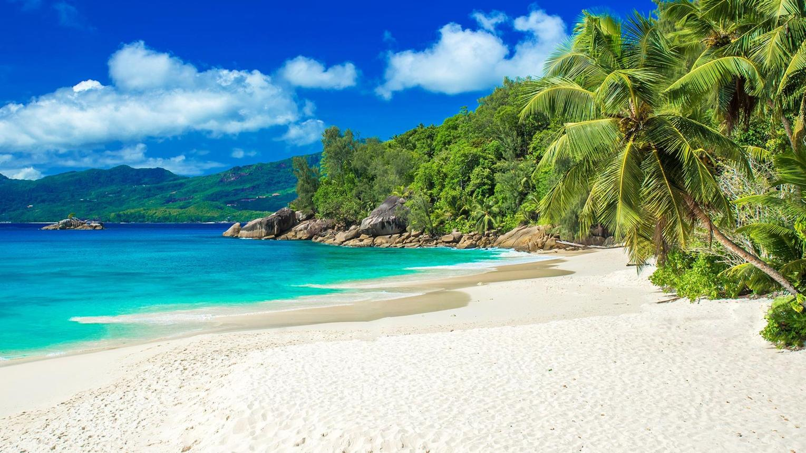
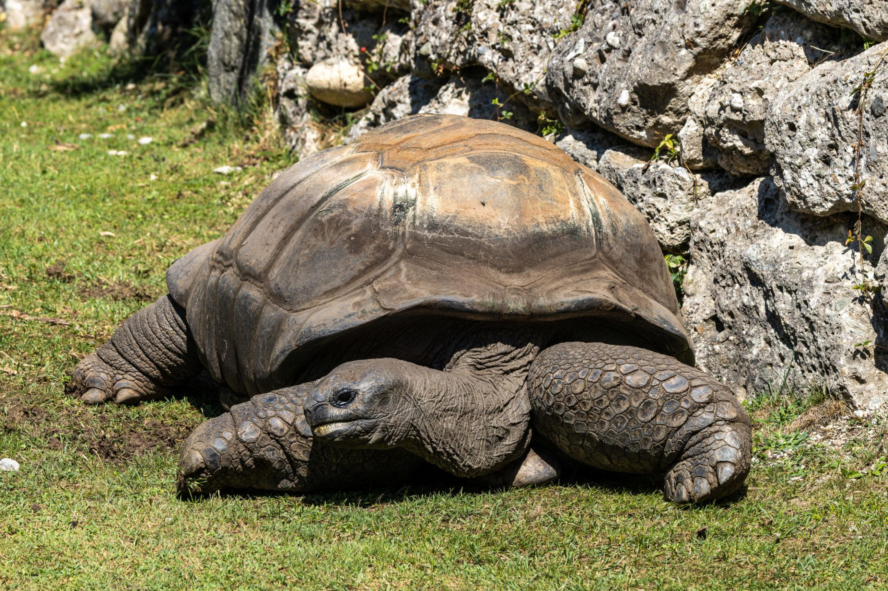
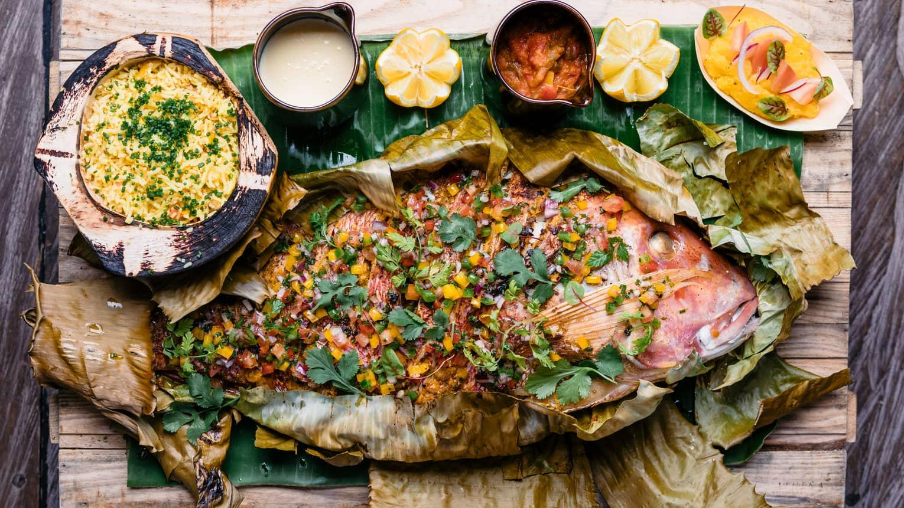

Breathtaking Beaches

Enjoy spectacular white sandy beaches, clear turquoise waters and dramatic granite rock formations. Seychelles offers beautiful coastal scenery perfect for relaxation and photography.
Discover the Beauty of Seychelles
Where turquoise waters, white sandy beaches and breathtaking landscapes create unforgettable memories.
Welcome to WonderWorld, your gateway to the extraordinary beauty of Seychelles. Discover a tropical paradise made up of beautiful islands, fascinating wildlife, rich cultural traditions and unforgettable adventures. Whether you are looking for relaxation on pristine beaches or exciting outdoor experiences, Seychelles has something special waiting for you.
Seychelles is an island nation located in the Indian Ocean, off the eastern coast of Africa. It is famous for its stunning beaches, crystal-clear waters, lush tropical forests and unique wildlife. The country consists of 115 islands, each offering its own natural beauty and experiences.
Beyond its beautiful scenery, Seychelles is also known for its diverse culture, influenced by African, European and Asian heritage. Its vibrant Creole traditions, delicious cuisine and welcoming communities make it a fascinating destination for travellers from around the world.
115
Islands
Indian
Ocean
Creole
Heritage
Whether you are seeking peaceful moments, exciting adventures or cultural discoveries, Seychelles offers experiences that make every journey memorable. Here are three reasons why you should consider visiting this tropical paradise.

Enjoy spectacular white sandy beaches, clear turquoise waters and dramatic granite rock formations. Seychelles offers beautiful coastal scenery perfect for relaxation and photography.

Discover remarkable biodiversity, from giant Aldabra tortoises to rare birds and tropical plants. Explore nature reserves and experience the islands' natural beauty.

Experience Seychellois Creole culture through traditional music, dance, festivals and delicious dishes influenced by different parts of the world.
Every island has a story to tell. From breathtaking beaches to beautiful natural landscapes, discover some of the most remarkable places Seychelles has to offer.
Paradise is closer than you think. Discover breathtaking destinations, experience vibrant island culture and create memories that will last a lifetime. Let WonderWorld guide you on your next unforgettable adventure.
Start Exploring